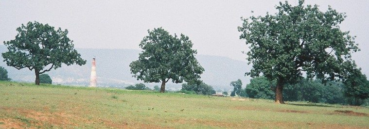

महुआMahua
Madhuca longifolia · Sapotaceae · FLR-0021

- Scientific name
- Madhuca longifolia (J.Koenig ex L.) J.F.Macbr.
- Family
- Sapotaceae
- Hindi
- महुआ / महुवा
- Status here
- native
- IUCN
- LC
When to look कब देखें
Present all year.
महुआ / Mahua
Madhuca longifolia (J.Koenig ex L.) J.F.Macbr. — Sapotaceae
महुआ — महुआ पूर्वी उत्तर प्रदेश और पूरे भारत के आदिवासी और ग्रामीण जीवन का आधार वृक्ष है। मार्च-अप्रैल में रात को इसके मीठे, मांसल फूल गिरते हैं — सुबह होने से पहले गाँव के लोग उन्हें बीनते हैं। यह फूल खाए जाते हैं, सुखाए जाते हैं, और किण्वित होकर पारंपरिक शराब बनती है। महुआ के बिना पूर्वांचल की जैव-सांस्कृतिक पहचान अधूरी है।
Quick Identification त्वरित पहचान
| Feature | Description |
|---|---|
| Tree form | Medium–large (10–20 m), dense spreading crown |
| Leaves | Clustered at branch tips, oblong-elliptic, 15–30 cm, leathery, glabrous |
| Flowers | Cream/yellowish, fleshy, tubular, nocturnal, strongly fragrant; fall intact to ground |
| Fruit | Fleshy berry, 3–5 cm, green → yellow; 1–4 large seeds |
| Bark | Dark grey-brown, longitudinally fissured, rough |
| Season clue | March–April nights: strong sweet scent; fallen cream flowers cover ground by dawn |
Field tip: A sweet-fermenting smell near a large tree on March nights is almost certainly mahua. The fallen flowers (not petals, but entire corollas) are fleshy, tubular, cream-colored, and edible.
Morphology आकारिकी
| Feature | Measurement |
|---|---|
| Plant height | 10–20 m |
| Leaf length | 15–30 cm |
| Leaf width | 5–10 cm |
| Flower diameter | 1.5–2 cm |
| Fruit / seed dimensions | 3–5 cm (fruit length) |
Trunk: Stout, 40–80 cm diameter in large trees. Bark dark grey-brown, furrowed and rough — contains milky latex when cut.
Leaves: Clustered near branch tips (a characteristic that helps identification from a distance). Blade 15–30 cm, oblong-elliptic, leathery (coriaceous), deep green above, paler below. Stipules persistent. New leaves reddish before turning green.
Flowers: Tubular-campanulate, fleshy, cream to pale yellow, 1.5–2 cm long, 8-lobed corolla. Produced in dense clusters in leaf axils. Strongly and sweetly fragrant — the scent is strongest at dusk and through the night. Each flower falls intact (not shattering into petals) within 1–3 days of opening.
Fruit: Fleshy, ovoid to oblong berry, 3–5 cm. Pulp sweet and edible. Contains 1–4 large seeds, 2–4 cm, dark brown, with a thin testa. Seeds rich in fatty oil (40–50%).
फूल: रात को खिलते हैं, सुबह होने से पहले अपने आप गिर जाते हैं। मीठे, मांसल, ट्यूबनुमा — हाथ से उठाकर चूसे जा सकते हैं।
बीज: बड़े, चमकीले भूरे; तेल से भरपूर — महुआ तेल/मक्खन बनता है।
Ecological Role पारिस्थितिक भूमिका
Bat pollination: Mahua is one of the most important bat-pollinated trees in the Indian subcontinent. The nocturnal, strongly fragrant, cream-coloured flowers are classic chiropterophily adaptations. Indian Flying Fox (Pteropus medius, MAM-0001) visits mahua trees at night, feeding on flowers and transferring pollen between trees. Without bat pollinators, fruit set is significantly reduced.
Seed dispersal: Fleshy fruits attract a wide guild of dispersers — jackals, civets, fruit bats, and birds. Seeds are resistant to digestion and germinate well after passing through animal gut.
Keystone subsistence tree: Mahua simultaneously provides: food (flowers, fruits), fuel (flower fermentation residue, wood), oil (seeds), livestock fodder (seed cake), and traditional medicine. It is genuinely a keystone species for human communities in the region — removal would cascade through multiple livelihood systems.
Nocturnal pollinator support: Beyond bats, mahua flowers attract night moths and beetles that also pollinate other species.
चमगादड़ परागण: फल चमगादड़ (MAM-0001) रात को महुआ के फूलों पर आते हैं, मकरंद चूसते हैं और परागण करते हैं। इन चमगादड़ों के बिना महुआ में फल कम लगेंगे।
Life Cycle / Phenology जीवन चक्र
| Month | Event |
|---|---|
| Jan–Feb | Leaves shed (brief deciduous period); new reddish leaves emerge |
| Mar–Apr | Flower fall — the primary harvest season; peak community activity |
| May–Jul | Fruit development and ripening; seed dispersal |
| Aug–Oct | Vegetative growth; seed germination if moisture adequate |
| Nov–Dec | Gradual leaf senescence |
The night harvest: During March–April, mahua flowers fall between 2 AM and dawn. Village families gather before sunrise, collecting flowers into baskets. Fresh flowers are eaten, boiled into sweets, or dried in the sun for 10–15 days. Dried flowers keep for months and are used through the lean season.
रात की कटाई: मार्च-अप्रैल में रात 2 बजे से सुबह होने तक फूल गिरते हैं। सूर्योदय से पहले परिवार जागकर फूल बीनते हैं — यह पूर्वांचल की एक अनूठी ग्रामीण परंपरा है।
Agricultural / Human Relevance कृषि एवं मानव उपयोग
Mahua flowers (महुआ फूल):
- Fresh: eaten as a sweet, succulent food (40–55% sugars)
- Dried: stored for off-season use; also fed to cattle
- Fermented: "mahua daru" — traditional liquor brewed by distillation. The British colonial authorities banned this liquor, causing social conflict with tribal communities; today it is regulated under state excise law in UP
Mahua oil (महुआ तेल / वनस्पति घी):
- Seeds yield 40–50% non-drying fatty oil ("mahua butter")
- Used for: cooking (especially among poorer communities), soap-making, illumination (oil lamps), leather treatment, biodiesel feedstock (research stage)
- Seed cake (after oil extraction): high-protein livestock feed; also used as fish poison in traditional pond management (saponin toxicity to gill-breathing fish)
Mahua in medicine:
- Bark: mild laxative, anti-inflammatory
- Flowers: cooling, used in fever management (folk)
- Seed oil: emollient, applied to skin conditions
Economic significance: Mahua flowers and seeds represent a significant non-timber forest product (NTFP) income for forest-fringe communities in eastern UP. Market prices for dried flowers: ₹20–40/kg.
महुआ तेल: बीजों से 40–50% तेल निकलता है — पकाने, साबुन और दीपक जलाने में उपयोग। इस तेल से पहले "वनस्पति घी" बनता था। बीज की खली मछली पकड़ने में भी उपयोग होती है।
Expected Locally स्थानीय रूप से अपेक्षित
Not a field record. Written from published accounts for eastern Uttar Pradesh. No confirmed local sighting yet — if you have seen it, that is what the atlas needs.
अभी तक स्थानीय पुष्टि नहीं। यह विवरण प्रकाशित स्रोतों से है, किसी अवलोकन से नहीं।
- Mahua trees found in forest patches in Basti, Balrampur, and Shravasti districts — particularly near Terai forest fringe
- Village boundary trees: individual trees often "owned" by families through customary rights — not formalized legally but respected locally
- Children eat fresh fallen flowers; elders distinguish superior "मीठे महुआ" trees from less-sweet ones
- Spring mornings in forest-edge villages: characteristic sweet fermenting smell from collected flowers
- Flying foxes observed feeding in mahua trees at night in Gorakhpur and Bahraich districts — UP northeastern zone
गाँव की धरोहर: कई परिवारों के पास पीढ़ियों से "अपना महुआ" होता है — जमीन का मालिकाना हक बदल जाए, पर महुआ उन्हीं परिवारों का रहता है। यह अलिखित परंपरागत अधिकार आज भी जीवित है।
Distribution वितरण
Global range: Native to the Indian subcontinent, including India, Nepal, Bangladesh, Myanmar, and Sri Lanka.
In India: Widespread in central, northern, and southern states, especially in deciduous forest belts of Madhya Pradesh, Bihar, Uttar Pradesh, Odisha, and Maharashtra.
In Uttar Pradesh: Common in southern (Vindhyan region) and eastern districts, particularly in forest patches and village commons.
In Basti district / eastern UP: Found in dry deciduous woodland fragments, village borders, and homestead gardens, often protected by local customs.
Range notes: No significant range changes documented; its presence is stable but heavily managed by human communities.
Research Questions शोध प्रश्न
- Are Indian Flying Fox (Pteropus medius) populations visiting mahua groves in Basti and Balrampur measurable? At what distance do they travel to reach mahua trees?
- How does mahua flower yield (kg/tree) vary with proximity to bat roost sites — is pollination the limiting factor in isolated trees?
- Does traditional customary ownership of mahua trees (unwritten family rights) still function as a de facto conservation mechanism?
- What is the current market structure for dried mahua flowers in eastern UP — who is the primary buyer and at what price?
- How does mahua phenology (flower-fall date) correlate with minimum night temperature in Basti district over the last decade?
Similar Species मिलती-जुलती प्रजातियाँ
| Species | How to distinguish |
|---|---|
| Madhuca indica (same complex) | Taxonomically nearly identical; some treat as synonym — same local use |
| Bassia latifolia (older synonym) | Now subsumed into Madhuca longifolia |
| Mimusops elengi (Bakul, बकुल) | Also Sapotaceae; flowers smaller, fragrant; fruits smaller ovoid; not edible in same way |
Taxonomy & Classification वर्गीकरण
Original description. Madhuca longifolia was first described by Carl Linnaeus (based on Johann Gerhard König's description) as Bassia longifolia in 1771 in Mantissa Plantarum Altera 563. It was transferred to the genus Madhuca by James Francis Macbride in 1918 in Contributions from the Gray Herbarium of Harvard University 53: 17. Type locality: Malabar, India. The genus name Madhuca is derived from the Sanskrit madhu (honey), referring to the sweet flowers.
Subspecies. Two varieties are recognized: M. longifolia var. longifolia (mainly southern India) and M. longifolia var. latifolia (Roxb.) A.Chev. (northern and central India). The form cultivated and wild in eastern UP is:
| Subspecies | Authority | Range | Notes |
|---|---|---|---|
| Madhuca longifolia var. latifolia | (Roxb.) A.Chev., 1943 | Northern and Central India, including UP | The variety present in eastern UP; characterized by broader leaves |
Family and order placement. Belongs to the order Ericales, family Sapotaceae, subfamily Sapotoideae, tribe Madhuceae. Sapotaceae is a family of about 800 species of trees and shrubs, mostly tropical, characterized by latex-containing tissues and leathery leaves.
Phylogenetic notes. Madhuca is a genus of about 85 species in tropical Asia. Molecular phylogenetic analyses place it within a clade that includes Payena and Burckella, supporting its tribal classification within Madhuceae.
IUCN status rationale. Classified as Least Concern (LC) by the IUCN Red List. It is a common and widely distributed native tree in India, though local populations are impacted by habitat conversion and intensive flower/seed collection.
Photo Gallery फ़ोटो गैलरी
No photos yet — photograph fallen flowers before dawn, fruit clusters, bark with latex, leaf clusters at branch tips.
Atlas Connections संबंधित प्रजातियाँ
- Indian Flying Fox — primary nocturnal pollinator of mahua flowers (MAM-0001)
- Asian Honey Bee — daytime visitor to mahua; secondary pollinator (INS-0007)
- Rohu — mahua seed cake traditionally used in pond management as fish toxin/deterrent (FSH-0001)
- Neem — co-occurs in dry deciduous forest patches and village boundaries (FLR-0009)
References सन्दर्भ
- Linnaeus, C. (1771). Mantissa Plantarum Altera, 563. Laurentii Salvii, Holmiae.
- Macbride, J.F. (1918). New or otherwise noteworthy plants. Contributions from the Gray Herbarium of Harvard University, 53: 1–22.
- Swaminathan, M.S. (1987). Madhuca longifolia — ethnobotany and nutritional value. Economic Botany, 41: 234–248.
- Botanical Survey of India — Flora of Eastern Uttar Pradesh, BSI, Allahabad.
- Shukla, R.P. (2009). Non-timber forest products in eastern Uttar Pradesh. IIFM Report, Bhopal.
- GBIF Occurrence Data — Madhuca longifolia, India (2026).
- Hooker, J.D. (1882). Flora of British India, Vol. III, pp. 543–544. L. Reeve & Co., London.
Source file: species/flora/trees/mahua.md